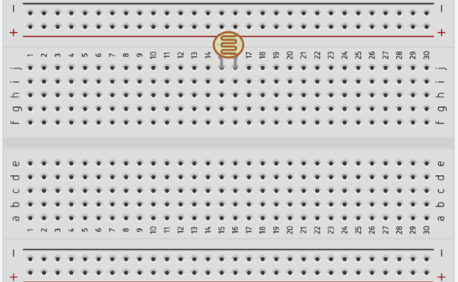
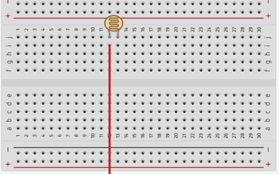
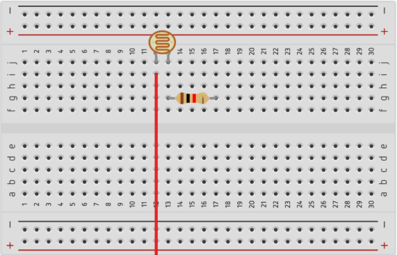
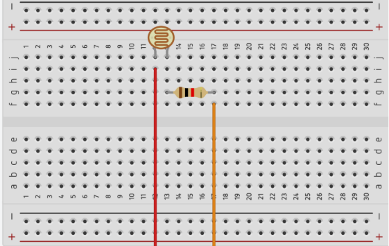
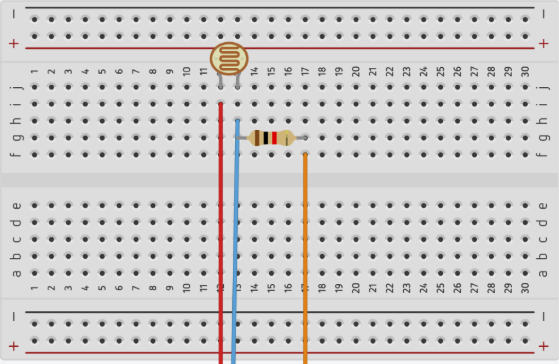
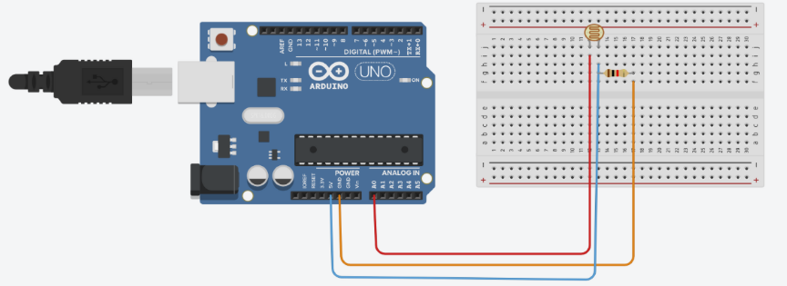

MONTAGEM DO ARDUINO
Passo 1 :
Conecte os jumpers no arduino nos encaixes 5v, GND e A0
( A cor dos fios que serão conectados não importa, apenas preze por serem cores diferentes para saber
qual está conectado em qual)

Passo 2 :
Conecte o sensor a uma parte da protoboard

Passo 3 :
Conecte o Jumper que está no A0 na perna esquerda do sensor LDR

Passo 4 :
Conecte o resistor nas duas entradas abaixo da perna direita do sensor

Passo 5 :
Conecte o Jumper do GND a perna direita do resistor

Passo 6 :
Conecte o Jumper do 5v à entrada logo acima da perna esquerda do resistor

Pronto!
O seu Arduíno Uno R3 está montado com o sensor LDR

 Clique em code, e copie o link que aparecer lá!
Clique em code, e copie o link que aparecer lá!